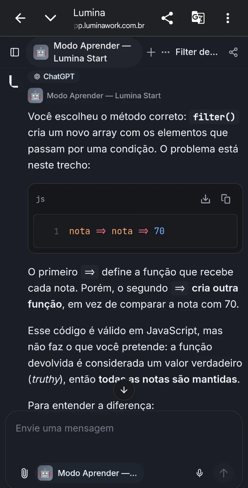
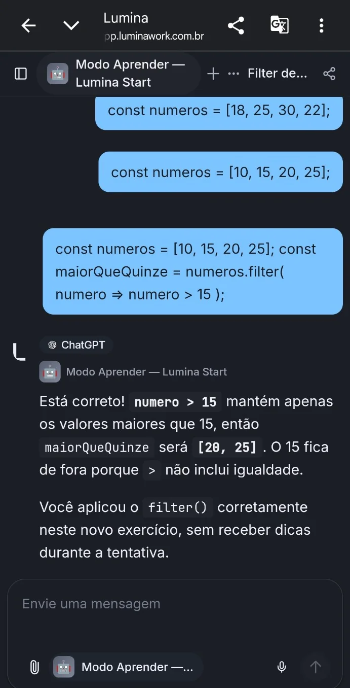
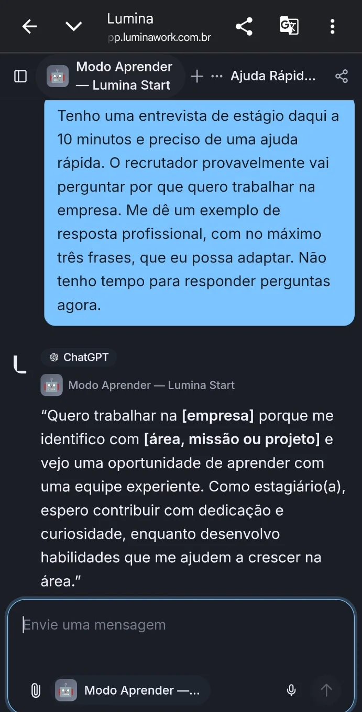

AG03 · DIAGNÓSTICO
Uma correção específica
O agente identificou o que estava correto e apontou precisamente o erro na condição.
E se a inteligência artificial não apenas ajudasse a concluir uma tarefa, mas também verificasse o que você consegue fazer sem ajuda?
O estudante tenta resolver
Correção específica, sem julgar
Um problema diferente, sem dicas
Alterne entre as duas experiências. O exemplo é uma simulação local interativa da proposta, não uma conversa com uma IA em tempo real.
filter()Dado o array, crie outro com as notas maiores ou iguais a 70.
const notas = [55, 70, 82, 64];Se a pessoa entende a condição e consegue aplicá-la — não apenas copiar a solução.
Para manter apenas as notas maiores ou iguais a 70, use filter() com uma comparação:
const aprovadas = notas.filter(nota => nota >= 70);
// [70, 82]Esta opção resolve imediatamente. É útil quando a intenção é obter uma informação rápida.
O filter() é uma boa escolha. Veja esta tentativa e descubra qual parte não está funcionando:
Muito bem. Agora um novo problema: no array [18, 25, 30, 22], selecione só as temperaturas menores que 25, sem incluir o 25.
filter(). A checagem é didática e reconhece padrões simples.Você resolveu um exercício novo sem usar pistas durante esta tentativa.
ⓘ Esta demonstração não faz chamadas à Lumina, não possui backend, não armazena respostas e não mede aprendizagem real. Ela ilustra o fluxo proposto; o agente testado na plataforma aparece nas evidências abaixo.
Registros reais fornecidos durante a investigação. A comparação é exploratória: apenas um participante e sem controle experimental suficiente para alegar superioridade.
Depois de uma atividade assistida sobre filter(), a primeira tentativa independente ainda confundiu o operador que cria funções (=>) com o operador de comparação (>=).
pontuacoes.filter(pontuacoes => pontuacoes => 70)Essa transcrição veio da resposta do participante neste estudo; não é uma captura de uma conversa na Lumina.
Eu conseguia explicar para que servia o método, mas na hora de colocar isso em prática ainda confundia alguns operadores.

O agente identificou o que estava correto e apontou precisamente o erro na condição.

Após práticas adicionais, houve resolução correta de um problema novo sem dicas naquela tentativa.

O modo educativo também respondeu diretamente quando o pedido exigia rapidez.
O protótipo apresentou comportamentos previstos nas instruções. Não demonstramos causalidade exclusiva, retenção de longo prazo ou eficácia superior à experiência convencional.
O agente experimental mostrou parte do funcionamento possível. A integração nativa e o acompanhamento ao longo do tempo são propostas futuras.
Reconhecer intenção, adequar explicações e oferecer pistas na medida certa.
Comportamento observadoDistinguir resolução com ajuda de uma nova aplicação sem dicas.
Comportamento observadoRegistrar dificuldades, progresso e revisões ao longo de diferentes sessões.
Evolução futuraRelacionar informações a fontes verificáveis e explicitar o que não foi consultado.
Evolução futuraA proposta prevê citações discretas e um painel para distinguir fontes realmente consultadas, materiais para leitura complementar e explicações baseadas no conhecimento do modelo.
Documento usado para fundamentar uma informação.
Material sugerido, não necessariamente consultado.
Sem documento original de treinamento rastreável.
Comecei com uma pergunta: a IA ajuda a aprender ou apenas facilita a conclusão de tarefas? Estruturei os testes com apoio do ChatGPT, utilizei a Lumina como ferramenta investigada e criei um agente para explorar a proposta na prática.
Os resultados são exploratórios. A próxima etapa seria testar a experiência com mais jovens, comparar o desempenho em problemas inéditos e avaliar a retenção ao longo do tempo.
Projeto individual para o Desafio Lumina Start, no contexto do Geração Caldeira.
GitHub do autor ↗